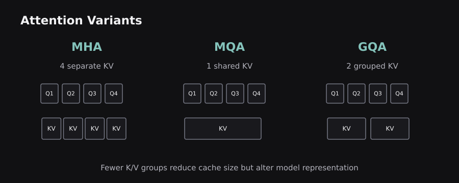
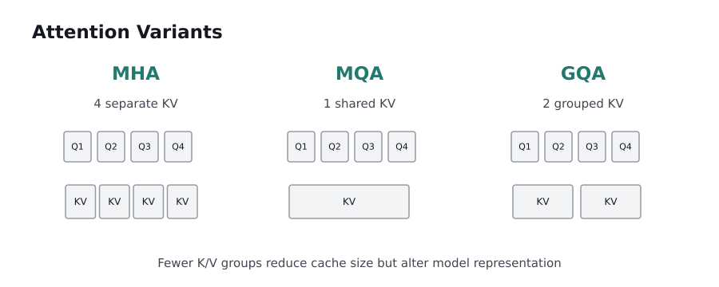
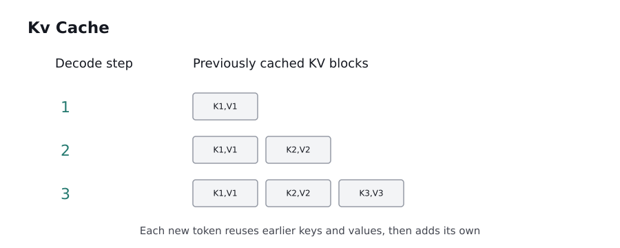

ENGINEERING BLOG / CHAPTER 09 OF 10
Advanced Transformers: Efficient Attention and Modern Architectures
Download chapter PDF ↓Large Transformer models introduce two costs that a beginner diagram can hide: computation across many token pairs and memory to hold parameters, activations, and cached context. This chapter explains the major architectural techniques that reduce those costs, what they preserve, and what trade-offs they create.
9.0 — Three different bottlenecks: compute, memory, and latency
A standard full-attention layer compares every query position to every key position. For n tokens, this produces approximately n² query–key relationships per head. The exact runtime depends on hardware, head dimension, kernels, sequence shape, and memory movement. Nevertheless, quadratic pair count explains why long contexts can be expensive.
During training, the system stores weights, gradients, optimizer state, and activations needed for backpropagation. During inference, gradients usually disappear, but model weights and the KV cache still occupy memory. The two phases should not be treated as having identical resource requirements.
It is also useful to distinguish prefill from decode. Prefill processes an existing prompt, often using many tokens in parallel. Decode repeatedly generates one more token per active sequence, reading prior keys and values each time. Prefill can be compute-heavy; decode can be strongly constrained by memory bandwidth and cache traffic.
Architectural goal: reduce expensive movement or redundant work without silently removing useful context. Some techniques produce the same mathematical result through a better implementation; others intentionally approximate or restrict attention and must be measured for quality impact.
9.1 — Relative positions: sinusoidal encodings, ALiBi, and RoPE
The original Transformer adds absolute sinusoidal position vectors to token embeddings. Later models use relative-position signals, making the attention score depend on the distance or relationship between query and key positions. A major example is ALiBi, which adds head-specific linear distance biases to attention scores. Another is Rotary Position Embedding (RoPE).
RoPE rotates pairs of query/key feature dimensions by position-dependent angles. For a 2D pair [x,y], a rotation by angle θ gives [x cosθ − y sinθ, x sinθ + y cosθ]. Queries and keys rotate at their own token positions, so their dot-product interaction can reflect relative position difference. The rotation is applied to Q/K subspaces rather than simply appending a position integer to each word.
Why relative information helps: when a model learns that two words separated by one position often relate, it is useful to represent that relation independently of whether they occur at positions 10–11 or 100–101. However, no positional scheme guarantees perfect extrapolation to contexts much longer than those used in training.
The newest implementation detail is not necessarily the most relevant for every reader: what matters first is that attention needs a position signal, and different schemes encode order in different places in the computation. Reference: RoFormer/RoPE.
9.2 — MHA, MQA, and grouped-query attention
In ordinary Multi-Head Attention (MHA), each attention head has its own projected keys and values. During autoregressive generation, storing them for previous tokens can consume substantial memory. Multi-Query Attention (MQA) shares one key/value head across multiple query heads, reducing the KV cache footprint. Grouped-Query Attention (GQA) is a middle ground: several query heads share each key/value head, but the model keeps more than one key/value group.
For an illustrative configuration, suppose there are eight query heads. MHA might store eight K/V heads per token; MQA might store one; a GQA design might store two. The precise memory reduction depends on head dimensions, layers, sequence length, data type, and other cached components. Sharing keys and values changes model expressivity, so it is not a free optimization.
Analogy: eight reporters can each maintain a separate archive (MHA), share a single archive (MQA), or share an archive per team (GQA). The analogy captures memory sharing but not how learned projections determine quality. In practice, one configuration should be chosen from measured latency, cache usage, and model performance.
GQA became important because it can offer an attractive quality–efficiency compromise for some decoder models. Primary source: Ainslie et al., GQA.
 
9.3 — FlashAttention: exact attention with less memory traffic
FlashAttention addresses a different problem from GQA. Standard implementations may materialize large attention-score and probability matrices in GPU high-bandwidth memory. Reading and writing these intermediate matrices is expensive. FlashAttention divides the computation into tiles that fit better in fast on-chip memory and performs a numerically stable, incremental softmax calculation over the tiles.
The key insight is I/O awareness. A mathematical operation can have the same high-level complexity but run faster if it moves fewer bytes between slow and fast memory. FlashAttention computes the full, exact attention operation up to normal floating-point precision differences; it is not a synonym for randomly dropping tokens or approximating attention sparsely.
What improves: intermediate memory usage and memory traffic can decrease substantially. What does not vanish: full dense attention still has quadratic query–key pairwise computation in sequence length. Long-context costs are reduced but not magically eliminated. Hardware support, kernel compatibility, masking, head dimensions, and sequence length affect practical speedups.
Illustration: rather than constructing an entire city map on a table to navigate one neighborhood, process manageable blocks and keep the running result. The analogy is about memory management, not a claim that the algorithm discards streets.
Primary source: Dao et al., FlashAttention.
9.4 — KV caching, prefill, decoding, and PagedAttention
When generating the next token, a decoder needs to compare that token's query with keys for earlier positions and combine previous value vectors. KV caching stores earlier keys and values so they do not need to be recomputed through all Transformer layers at every generation step. New tokens extend the cache.
For a conventional cache, an approximate storage expression is 2 × layers × KV_heads × head_dimension × cached_tokens × bytes_per_element, excluding allocation overhead and any additional state. The factor of two represents keys and values. This formula shows why sequence length, layer count, and KV sharing matter.
A simple timeline is prefill input prompt → store initial K/V → generate one token → append its K/V → generate the next token. Cached prefixes can reduce repeated computation, but they remain memory-consuming. A cache must be invalidated or isolated correctly when the effective input, model, or permissions change.
PagedAttention, used in vLLM, manages cached K/V in blocks rather than requiring each sequence to occupy one large contiguous region. This resembles virtual-memory paging and can reduce fragmentation and support efficient sharing. Paging changes memory management, not the learned attention function itself. Primary source: Kwon et al..

9.5 — Multi-Head Latent Attention and decoupled RoPE
Multi-Head Latent Attention (MLA) approaches KV memory through low-rank compression. Instead of caching a separate full-size key and value vector per head, a model projects token information into a smaller shared latent representation and reconstructs or algebraically uses the information required for attention. This can reduce cache storage while retaining rich multi-head interactions.
The difficulty is positional encoding. RoPE normally rotates query and key vectors by position. If keys are compressed and projected through learned matrices, some naive combinations of rotation and projection prevent the useful low-rank factorization. Decoupled RoPE separates content and positional components so a compressed content path can coexist with a smaller position-aware path.
Conceptual workflow: hidden state → down-project K/V content into a compact latent → retain compressed content for future tokens → combine content with an appropriately rotated positional part in attention computation. Implementation details, such as whether specific projections are absorbed algebraically, matter to the actual compute cost.
Limitations: MLA is more involved than simply reducing KV head count. Quality, hardware kernels, and model-specific implementation determine whether its theoretical savings produce practical benefit. Primary source: DeepSeek-V2.
9.6 — Sparse, sliding-window, and long-context attention
Full attention allows every eligible token to interact with every other token, but not every application needs unrestricted pairwise interaction at every layer. Sliding-window attention limits attention to nearby tokens. Sparse attention chooses selected pairs or structured patterns. Global tokens or periodic full-attention layers can preserve communication across distant regions.
A sliding window of width w changes the number of allowed pairs from roughly n² to roughly n×w, but information travels across long distances only through multiple layers or additional global pathways. This trade-off suits tasks where local relationships dominate. It can be poor when an answer depends on a precise fact far back in the prompt.
Selection-based sparse attention may use a learned or computed indexer to select relevant earlier tokens. Some modern variants combine a lightweight retrieval step with a more expressive attention kernel over the selected subset. Such methods trade computation for selection overhead and risk omitting important evidence. Their speed and quality must be measured at realistic long-sequence lengths.
A large advertised context window does not prove that every position contributes equally or can be retrieved reliably. Long-context evaluation should include documents where relevant evidence appears at the beginning, middle, and end, plus distractors and exact-match identifiers.
9.7 — Mixture of Experts and conditional computation
Mixture of Experts (MoE) layers replace a single dense feed-forward transformation with multiple expert networks and a router that selects which experts process each token. In a top-k routed layer, a token may be sent to only a small subset of experts. This allows total model parameter capacity to grow without activating every expert for every token.
Dense versus sparse computation matters here. A model might contain many total parameters, but fewer active parameters per token during MoE inference. Thus “model size” and “compute per token” are different. Experts are trained jointly with routing; they should not be imagined as necessarily possessing neat professions like “math expert” or “medical expert.”
Routing introduces new engineering challenges: load balancing, communication across devices, uneven expert usage, memory placement, and training stability. If every token chooses the same expert, other experts receive little training and hardware becomes poorly utilized. Auxiliary balancing objectives or specialized routing designs address this.
Analogy: a support center dispatches tickets to a subset of specialized teams rather than asking every team to process every ticket. The analogy breaks because the routing decision and experts are differentiable or learned mathematical components, not independent human agents.
9.8 — LoRA, QLoRA, quantization, and distillation
Full fine-tuning updates a huge number of weights and may require substantial optimizer memory. LoRA (Low-Rank Adaptation) freezes an existing weight matrix W and learns a smaller update approximated by ΔW = BA, where B and A are low-rank matrices. If rank r is much smaller than the input and output dimensions, far fewer trainable parameters are needed than a full matrix update.
QLoRA combines quantized storage of the pretrained model with LoRA-style trainable adapters, allowing adaptation under tighter memory budgets. Quantization represents weights or activations with fewer bits; it can reduce model storage and memory bandwidth, but precision loss and kernel support require measurement. Distillation trains a smaller student model using signals from a larger teacher, aiming to preserve useful behavior at lower inference cost.
These methods answer different questions: LoRA reduces trainable parameters; quantization reduces representation precision and often memory; distillation creates a different smaller model. They can sometimes be combined but are not interchangeable.
A sensible selection process measures task quality and total system cost, including hardware, data preparation, training stability, licensing, and continued model maintenance. Primary source: LoRA.
9.9 — Putting efficiency methods together, without confusing them
A serving stack can combine several techniques because they optimize different parts of the pipeline. RoPE supplies position information. GQA or MLA reduces the size or form of stored keys and values. FlashAttention reduces memory traffic during dense attention. PagedAttention organizes cache memory. Quantization reduces the storage precision of parameters or cached tensors. MoE changes which feed-forward parameters execute per token.
It is a mistake to say any one of these makes long-context generation “linear, instant, and free.” Their benefits overlap, interact, and sometimes conflict. For example, a custom attention mechanism may lack an optimized kernel, so fewer theoretical operations can still run slower on a particular GPU. Batching can raise overall throughput while making an individual request wait longer.
Engineering checklist in prose: identify whether the bottleneck is prompt prefill, per-token decoding, cache capacity, inter-device communication, or answer quality; choose a technique that targets that constraint; then measure first-token latency, tokens per second, total memory, and quality under representative workloads.
Chapter synthesis: modern Transformers evolve by controlling how positions are encoded, how Q/K/V are stored and shared, how attention is executed, and how computation is distributed across experts. In the final chapter, we connect these architectures to real training, retrieval, evaluation, and deployment decisions.
Sources and further reading
These sources supplement the original explanations. The uploaded PDFs and cheatsheets informed the topic coverage; their illustrations and prose are not republished.